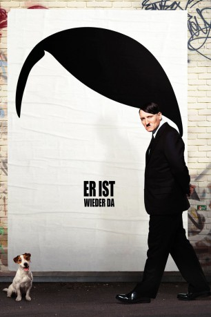

#3375 Er ist wieder da
 gesehen am 30.03.2016
gesehen am 30.03.2016
 
 IMDB-Wertung: 7.1 / 10
IMDB-Wertung: 7.1 / 10  Metascore: 0
Metascore: 0 
Er ist wieder da, der Führer. Knapp 70 Jahre nach seinem unrühmlichen Abgang erwacht Adolf Hitler im Berlin der Gegenwart. Ohne Krieg, ohne Partei, ohne Eva. Im tiefsten Frieden, unter Angela Merkel und vielen tausend Ausländern startet er, was man am wenigsten von ihm erwartet hätte: eine Karriere im Fernsehen. Denn das Volk, dem er bei eine Reise durch das neue Deutschland begegnet, hält ihn für einen politisch nicht ganz korrekten Comedian und macht ihn zum gefeierten TV-Star. Und das, obwohl sich Adolf Hitler seit 1945 äußerlich und innerlich keinen Deut verändert hat.
Jahr: 2015
Dauer: 115 Minuten
FSK: 12
Land: Deutschland Studio: Constantin FilmTonspuren:
Untertitel: , Französisch,
Auflösung: 1080p (1920x1040) Größe: 8130 MB
Genre: Komödie
Regisseur: David Wnendt
Drehbuch: David Wnendt, Mizzi Meyer, Timur Vermes, Marco Kreuzpaintner, Johannes Boss
Soundtrack: Enis Rotthoff
Darsteller:
 Katja Riemann als Katja Bellini
Katja Riemann als Katja Bellini Christian Harting als Bild-Chef
Christian Harting als Bild-Chef Oliver Masucci als Adolf Hitler
Oliver Masucci als Adolf Hitler- Thomas M. Köppl als Benimmcoach
- Marc-Marvin Israel als Fußballjunge
- David Gebigke als Fußballjunge
- Paul Busche als Fußballjunge
- Fabian Busch als Fabian Sawatzki
- Gerdy Zint als Pantomime
- Nancy Maria Brüning als Mutter mit Kinderwagen
- Lars Rudolph als Kioskbesitzer
- Hauke Schmidt als Comedy Autor
- Franziska Wulf als Krömeier
 Christoph Maria Herbst als Christoph Sensenbrink
Christoph Maria Herbst als Christoph Sensenbrink- Thomas Thieme als Senderchef Kärrner
- Michael Ostrowski als Rico Mancello
- Christoph Zrenner als Gerhard Lümmlich
- Nina Beesk als Redakteurin My TV
- Rocco Coufin als Redakteur My TV
- Michael Grenzau als Redakteur My TV
- Stefan Kreißig als Redakteur My TV
- Niels O. Scheer als Redakteur My TV
- David Segler als Redakteur My TV
- Alexander Udalov als Redakteur My TV
- Ramona Kunze-Libnow als Mutter Sawatzki
- Fred Aaron Blake als Hundezüchter
- Bernardo Arias Porras als Gothicfreund
 Gudrun Ritter als Großmutter Krömeier
Gudrun Ritter als Großmutter Krömeier- Georg Kammerer als Comedy Autor
- Folke Renken als Comedy Autor
- Andrew Bulkeley als Comedy Autor
- Bernd Zeller als Comedy Autor
- Tim Whelan als Comedy Autor
- Michael Kessler als Michael Witzigmann
- Klaas Heufer-Umlauf als Moderator Circus Halligalli
- Joko Winterscheidt als Moderator Circus Halligalli
- Daniel Aminati als Moderator Taff
- Jörg Thadeusz als Moderator Thadeusz
 Jakob Bieber als Jüngelchen
Jakob Bieber als Jüngelchen- Maximilian Strestik als Ulf Birne
 Stephan Grossmann als Staatsanwalt Göttlicher
Stephan Grossmann als Staatsanwalt Göttlicher- Frank Plasberg als Frank Plasberg
- Roberto Blanco als Roberto Blanco
- Micaela Schäfer als Micaela Schäfer
- Kim Gloss als Kim Gloss
- Marian Meder als Sawatzki Darsteller
 Piet Fuchs als Maik
Piet Fuchs als Maik- Aaron Hildebrand als Neonazi 1
- Patrick Heinrich als Neonazi 2
- Paul Maaß als Krankenpfleger Falko
Datei: X:\2015(A-F)\Er ist wieder da (2015, FSK12, 1920x1040).mkv seit 28.03.2016
Festplatte: HD 2015(A-Z)
 Es gibt insgesamt 143 Filme in der Gruppe '2015(A-F)'
Es gibt insgesamt 143 Filme in der Gruppe '2015(A-F)'